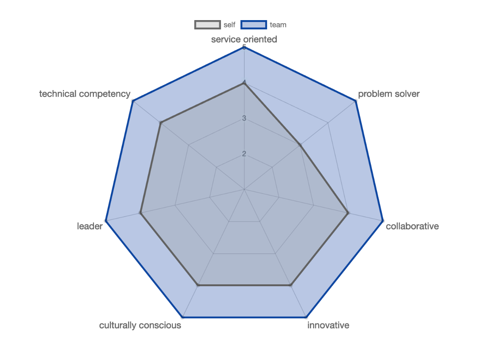

Skill 01 of 04
Collaboration
Coordinating a team so separate work becomes one coherent result.
Context
In a university client consulting project, I analysed a client’s social media presence and competitors. I was responsible for the competitor analysis, including research, analysis and report writing.
At the first-draft stage, I created a shared Google Doc so team members could work in one place, and I coordinated task allocation. I also standardised the formatting, consolidated the references, and prepared and submitted the draft.
Evidence of development
The client confirmed that every team member had contributed and described the report as comprehensive, with a very good framework and structure. I believe the comment on structure relates to the formatting and reference integration I carried out, which brought the separate sections together into one coherent report.

“…each team member has contributed to the report”

Team rating (blue) and my own rating (grey) across seven skills
Link to the project


Critical reflection
Dacre Pool and Sewell (2007) include teamwork and the ability to coordinate and organise among the generic skills in their employability model, but argue that possessing a skill is not enough on its own: it is reflection on and evaluation of an experience that turns it into employability. Carrying out the integration was the skill; reflecting afterwards was what made it useful.
Because each member worked separately, consistency had to be fixed at the end; setting shared formatting and referencing rules at the start would make responsibilities explicit and reduce rework.